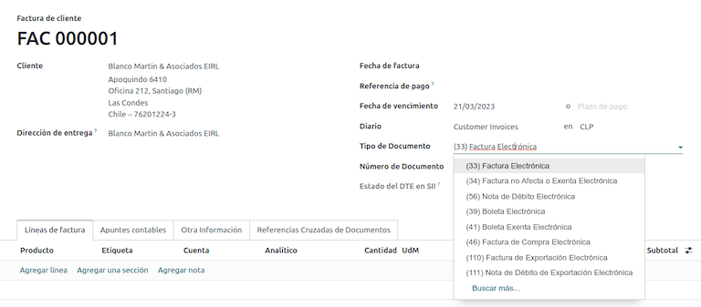
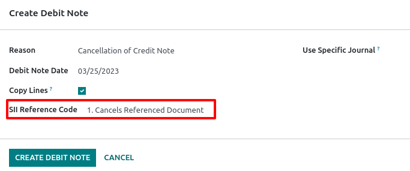
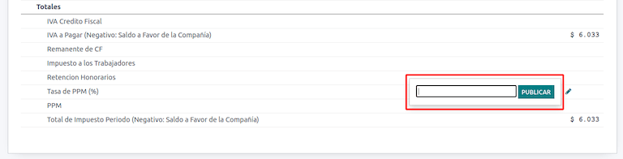

ชิลี¶
Tip
ดูการบันทึกการสัมมนาผ่านเว็บสองรายการด้านล่างเพื่อเรียนรู้แปลเป็นภาษาท้องถิ่นและค้นหาบทเรียนในรายการเพลงเพื่อค้นหาการปฏิบัติขั้นตอนการทำงานเมื่อใช้ Odoo ในชิลี
`Webinar: บทนำและการสาธิต < https://youtu.be/BHnByZiyYcM >`_.
`Webinar: คู่มือการจัดส่ง < https://youtu.be/X7i4PftnEdU >`_.
`รายการเพลงกวดวิชา< https://youtube.com/playlist?list=PL1 -aSABtP6AB6UY7VUFnVgeYOaz33fb4P>。
See also
`ทัวร์แอปแปลภาษาชิลี< https://www.youtube.com/watch?v=3qYkgbmBYHw >`_
กวดวิชาสมาร์ทการแปลภาษาชิลี https://www.odoo.com/slides/smart-กวดวิชา - ตำแหน่ง - ไปชิป - 131> `_
โมดูล¶
:อ้าง:` ติดตั้ง <general / Install>` โมดูลต่อไปนี้เพื่อใช้ประโยชน์จากทั้งหมดลักษณะของการโลคัลไลเซชันในชิลี
ชื่อ-นามสกุล |
ชื่อทางเทคนิค |
คำแนะนำ |
|---|---|---|
:: guilabel:` ชิลี - บัญชี ` |
|
เพิ่มฟังก์ชันการบัญชีขั้นต่ำที่จำเป็นสำหรับการดำเนินงานของ บริษัทชิลีตามระเบียบ "SII" (บริการสิ่งสกปรกระหว่างประเทศ)" และแนวทาง |
:guilabel:` ชิลี - รายงานบัญชี ` |
|
เพิ่ม * Propuesta F29 * และ * สมดุล Tributario (8 คอลัมน์) * รายงาน |
:: guilabel:` ชิลี - e-Invoice` |
|
รวมถึงข้อกำหนดทางเทคนิคและฟังก์ชั่นทั้งหมดที่สร้างและรับใบแจ้งหนี้อิเล็กทรอนิกส์ออนไลน์ตาม SII (บริการสิ่งสกปรก)Internos) บทบัญญัติ |
:: guilabel:` ชิลี - e-Receipt` |
|
รวมถึงข้อกำหนดทางเทคนิคและฟังก์ชั่นทั้งหมดที่สร้างและรับใบแจ้งหนี้อิเล็กทรอนิกส์แบบดิจิตอลตาม SII (บริการสิ่งสกปรก)Internos) บทบัญญัติ |
:guilabel:` การส่งออกสินค้าอิเล็กทรอนิกส์ของชิลี |
`l10n_cl_edit _ ทางออก ` |
รวมถึงข้อกำหนดทางเทคนิคและฟังก์ชั่นสำหรับการสร้างไฟล์อิเล็กทรอนิกส์ใบแจ้งหนี้สินค้าส่งออกตาม SII (บริการสิ่งสกปรก)Internos) และระเบียบศุลกากร |
:guilabel:` ชิลี - คู่มือการจัดส่งใบแจ้งหนี้อิเล็กทรอนิกส์ |
|
รวมความต้องการทางเทคนิคและฟังก์ชั่นทั้งหมดสำหรับการจัดส่งจัดทำแนวทางผ่านบริการเครือข่ายตาม SII (บริการสิ่งสกปรก)Internos) บทบัญญัติ |
Note
Odoo จะติดตั้งแพ็กเกจที่เกี่ยวข้องให้กับบริษัทโดยอัตโนมัติตามประเทศที่เลือกเมื่อสร้างฐานข้อมูล
The Chile - E-Invoicing Delivery Guide module depends on the Inventory application.
Important
ฟังก์ชั่นทั้งหมดจะใช้ได้ก็ต่อเมื่อ บริษัท ได้ทำ "SII" เรียบร้อยแล้วระบบข้อเท็จจริงของตลาด< https://www.sii.cl/factura_electronica/factura_mercado/proceso_certificacion.htm >`_กระบวนการรับรอง
ข้อมูล บริษัท¶
ไปที่: ส่วนเมนู: "การตั้งค่า -> บริษัท: อัปเดตข้อมูล" และตรวจสอบให้แน่ใจว่าข้อมูลของ บริษัท ต่อไปนี้เป็นปัจจุบันและกรอกข้อมูลถูกต้อง:
ชื่อบริษัท
:guilabel:` ที่อยู่':
: ถนน
เมือง`
: guilabel: ประเทศ
：guilabel:
ZIP: guilabel: ประเทศ
Tax ID:ใส่หมายเลขประจำตัวที่เลือก:ref:` ประเภทผู้เสียภาษี < ชิลี / ข้อมูลทางการเงิน> `
:guilabel:` ชื่อแคมเปญ': เลือกรหัสแคมเปญได้สูงสุดสี่รหัส
: guilabel: "คำอธิบายกิจกรรมของ บริษัท ": ป้อนคำอธิบายสั้น ๆกิจกรรมของบริษัท
การตั้งค่าบัญชี¶
ถัดไปไปที่: ส่วนเมนู: `การบัญชี -> การกำหนดค่า -> การตั้งค่า--> การแปลภาษาชิลี "และกำหนดค่าตามคำแนะนำ:
:ref:` ข้อมูลทางการเงิน < ชิลี / ข้อมูลทางการเงิน > `
:ref:` ข้อมูล e-Invoice < ชิลี / e-Invoice>
:อ้าง:
DTE รับอีเมลเซิร์ฟเวอร์ <chile/DTE-email>signature certificate
ข้อมูลทางการเงิน¶
กำหนดค่าต่อไปนี้: guilabel: `ข้อมูลผู้เสียภาษี':
: guilabel: "ประเภทผู้เสียภาษี" โดยเลือกประเภทผู้เสียภาษี:
: guilabel: "ได้รับผลกระทบจากภาษีมูลค่าเพิ่ม (ประเภทแรก)": ใบแจ้งหนี้สำหรับภาษีจากวัตถุต่อไปนี้ลูกค้า
: guilabel: "ผู้ออกใบเสร็จค่าธรรมเนียม (ประเภทที่ 2)"ใบเสร็จรับเงิน (Boletta)
: guilabel: "End Consumer": ออกใบเสร็จรับเงินเท่านั้น
: guilabel: ชาวต่างชาติ
: guilabel: "สำนักงาน SII": เลือกชื่อบริษัท: ชื่อย่อ: "SII (Servicio deInternos ) สำนักงานภูมิภาค
ข้อมูล e-Invoice¶
เลือกของคุณ: guilabel: SII Web Services สภาพแวดล้อม:
: guilabel: "SII-Test": ฐานข้อมูลการทดสอบที่ใช้การทดสอบ: ย่อ: "CAF (Folio)"รหัสอนุญาต) ที่มา: ชื่อย่อ: SIIนักศึกษาฝึกงาน) ในโหมดนี้สามารถทดสอบกระแสการเชื่อมต่อโดยตรงเอกสารเหล่านี้จะถูกส่งไปยัง: ตัวย่อ: "SII (บริการสิ่งสกปรกภายใน)"
: guilabel: "SII-Production": สำหรับฐานข้อมูลการผลิต
: guilabel: "SII - โหมดสาธิต": ไฟล์จะถูกสร้างและยอมรับโดยอัตโนมัติในโหมดสาธิต แต่ ** ไม่ ** ส่งไปยัง: abbr:`SII (บริการสิ่งสกปรก)นักศึกษาฝึกงาน) ดังนั้น การปฏิเสธความผิดพลาด หรือ *การยอมรับด้วยการคัดค้าน*จะไม่ปรากฏในโหมดนี้ การตรวจสอบภายในทุกครั้งสามารถทำได้ที่โหมดสาธิต หลีกเลี่ยงการเลือกตัวเลือกนี้ในฐานข้อมูลการผลิต
จากนั้นป้อน: guilabel: `ข้อมูล e-Invoice ที่ถูกต้องตามกฎหมาย':
:guilabel:หมายเลขมติ SII
:guilabel:` วันที่ลงมติ SII

DTE รับเซิร์ฟเวอร์อีเมล¶
ชื่อย่อ: "DTE (วรรณกรรมไฟฟ้า)": guilabel: "กล่องจดหมายใบแจ้งหนี้อิเล็กทรอนิกส์สามารถกำหนดให้เป็นการรับข้อเรียกร้องจากลูกค้าและรับอีเมล เปิดใช้ตัวเลือกนี้จาก: ส่วนการใช้เมนู: `บัญชี -->การกำหนดค่า -> การตั้งค่า -> การแปลภาษาชิลีต้องการใช้ * E-Invoice กล่องจดหมาย * เป็นตัวย่อ: `DTE (Documentosเซิร์ฟเวอร์รับอีเมล Tributarios Electronicos )
Important
ในการรับไฟล์ SII ของคุณจำเป็นต้องสร้างของคุณเองเซิร์ฟเวอร์อีเมล ข้อมูลเพิ่มเติมเกี่ยวกับวิธีการทำเช่นนี้สามารถพบได้ที่นี่เอกสาร:: doc:`..// การสื่อสารทั่วไป / อีเมล
คลิกแรก: guilabel: "กำหนดค่าอีเมลขาเข้า DTE" และคลิก:guilabel:new เพิ่มเซิร์ฟเวอร์และกรอกข้อมูลต่อไปนี้
Name:ตั้งชื่อเซิร์ฟเวอร์
: guilabel: "ประเภทเซิร์ฟเวอร์": เลือกประเภทของเซิร์ฟเวอร์ที่จะใช้
เซิร์ฟเวอร์ IMAP
เซิร์ฟเวอร์ POP
: guilabel: "local server": ใช้สคริปต์ท้องถิ่นเพื่อรับอีเมลและสร้างใหม่บันทึกไว้ สคริปต์สามารถพบได้ในส่วน: guilabel: `Configuration`เลือกตัวเลือกนี้
:guilabel:`Gmail OAuth Authentication':ต้องการข้อมูลประจำตัว Gmail API ของคุณกำหนดค่าในการตั้งค่าทั่วไป การเชื่อมโยงโดยตรงกับการกำหนดค่าสามารถพบได้ใน: guilabel: "ข้อมูลการเข้าสู่ระบบ" ส่วน
DTE-Server:เปิดใช้ตัวเลือกนี้ โดยเลือกตัวเลือกนี้บัญชีอีเมลของคุณจะถูกใช้เพื่อรับอีเมลจากผู้ให้บริการและการสื่อสารจาก SII (บริการสิ่งสกปรก)Internos) เกี่ยวกับการออกใบแจ้งหนี้อิเล็กทรอนิกส์ ในกรณีนี้อีเมลควรตรงกับอีเมลสองฉบับที่ระบุใน: abbr:`SII (Servicio de)สถานที่ของสิ่งสกปรก Internos ) * ACTUALIZACION DE DATOS DELผู้บริจาค *, * จดหมายติดต่อ SII * และ * จดหมายติดต่อธุรกิจ *
ใน: guilabel: เซิร์ฟเวอร์และการเข้าสู่ระบบแท็บ (สำหรับเซิร์ฟเวอร์ IMAP และ POP):
: guilabel: "ชื่อเซิร์ฟเวอร์": ป้อนชื่อโฮสต์หรือ IP ของเซิร์ฟเวอร์
: guilabel:
Port: ป้อนพอร์ตเซิร์ฟเวอร์:guilabel:` SSL / TLS`: หากการเชื่อมต่อใช้การเข้ารหัสโปรโตคอล SSL / TLS
Username:ป้อนชื่อผู้ใช้เข้าสู่ระบบเซิร์ฟเวอร์
Password:ป้อนรหัสผ่านเข้าสู่ระบบเซิร์ฟเวอร์

Tip
ก่อนที่จะออนไลน์ขอแนะนำให้เก็บหรือลบอีเมลที่เกี่ยวข้องทั้งหมดส่งใบเรียกเก็บเงินจากบัญชีของคุณไปยังผู้ขายที่ไม่จำเป็นต้องดำเนินการใน Odooอินบ็อกซ์
ใบรับรอง¶
ต้องมีใบรับรองดิจิทัลในรูปแบบ ".pfx" เพื่อสร้างลายเซ็นใบแจ้งหนี้อิเล็กทรอนิกส์ หากต้องการเพิ่มหนึ่งคลิก: guilabel:` การกำหนดค่าใบรับรองลายเซ็น 'ภายใต้: guilabel:` ใบรับรองลายเซ็น 'ส่วน จากนั้นคลิก: guilabel: New กำหนดค่าใบรับรอง:
:: guilabel:` Certificate Key': คลิก: guilabel:` อัปโหลดไฟล์ของคุณ' และเลือกไฟล์ .pfx
: guilabel: `Certificate Key': ป้อนรหัสผ่านของไฟล์
: guilabel: "หมายเลขซีเรียลของหัวข้อ": ตามรูปแบบใบรับรองฟิลด์อาจไม่เต็มโดยอัตโนมัติ ในกรณีนี้โปรดป้อนตัวแทนทางกฎหมายของใบรับรอง: ย่อมาจาก "RUT (Rolúnico Tributario)"
:guilabel:` Certificate Owner': หากต้องการ จำกัด เจ้าของใบรับรองโปรดเลือกหนึ่งใบรับรองสำหรับผู้ใช้ที่เฉพาะเจาะจง ปล่อยให้ฟิลด์ที่ว่างเปล่าเพื่อแบ่งปันกับทุกคนผู้ใช้การเรียกเก็บเงิน

หลายสกุลเงิน¶
อัตราแลกเปลี่ยนอย่างเป็นทางการโดย `ชิลี mindicador.cl< https://mindicador.cl >`_. ไปที่: ส่วนเมนู: การบัญชี ->การกำหนดค่า -> การตั้งค่า -> สกุลเงิน: อัตราแลกเปลี่ยนอัตโนมัติที่จะตั้งค่าa: guilabel: `Interval หมายถึงเวลาที่อัตราการอัปเดตอัตโนมัติหรือเลือกอีก: guilabel:`บริการ'
ข้อมูลพันธมิตร¶
ยังต้องกำหนดค่าติดต่อพันธมิตรเพื่อส่ง: ชื่อย่อ: `SII (Servicioใบแจ้งหนี้อิเล็กทรอนิกส์ เปิด: menuselection: "ติดต่อ" app ทำเช่นนี้และกรอกข้อมูลในฟิลด์ต่อไปนี้แบบฟอร์มติดต่อใหม่หรือที่มีอยู่
:guilabel:`ชื่อจริง
อีเมล์: guilabel
:guilabel:` หมายเลขประจำตัว `
:guilabel:` ประเภทผู้เสียภาษี
:guilabel:` รายละเอียดกิจกรรม `
ใน: guilabel: "ใบแจ้งหนี้อิเล็กทรอนิกส์" แท็บ:
:guilabel:`DTE Email':ป้อนที่อยู่อีเมลของผู้ส่งของพันธมิตร
:guilabel:` ราคาคู่มือการจัดส่ง': เลือกราคาสำหรับคู่มือการจัดส่งจอแสดงผล (ถ้ามี)
Note
:guilabel:"DTE Email" เป็นอีเมลที่ใช้ส่งเอกสารอิเล็กทรอนิกส์และต้องตั้งไว้ในรายชื่อที่จะเป็นส่วนหนึ่งของเอกสารอิเล็กทรอนิกส์

ประเภทของเอกสาร¶
บัตรกำนัลทางบัญชีจำแนกตาม: ชื่อย่อ: SIIInternos ) - ประเภทของเอกสารที่กำหนด
ประเภทของเอกสารจะถูกสร้างขึ้นโดยอัตโนมัติหลังจากการติดตั้งโมดูลตำแหน่งสามารถจัดการได้โดยการนำทางไป: menusesection:` การบัญชี -> การกำหนดค่า -> ประเภทของเอกสาร

Note
เอกสารหลายประเภทไม่ได้ใช้งานโดยค่าเริ่มต้น แต่สามารถเปิดใช้งานได้โดยสลับ: guilabel: ตัวเลือก "Active"
ใช้ในใบแจ้งหนี้¶
ประเภทของเอกสารแต่ละรายการจะพิจารณาจากปัจจัยต่อไปนี้:
บันทึกประจำวันที่เกี่ยวข้องกับใบแจ้งหนี้ระบุว่ามีการใช้บันทึกประจำวันหรือไม่เอกสาร
เงื่อนไขที่ใช้บังคับตามประเภทของผู้ออกและผู้รับ (เช่นระบบการเงินของผู้ซื้อหรือผู้ขาย)
การขายวารสาร¶
Sales journals in Odoo usually represent a business unit or location.
Example
เวนทัส ซานดิเอโก
วัลปาเลโซ
สำหรับร้านค้าปลีกมักจะมีบันทึกประจำวันสำหรับแต่ละ POS (จุด)ขาย)
Example
พนักงานเก็บเงิน 1.
พนักงานเก็บเงิน 2.
The purchase transactions can be managed with a single journal, but sometimes companies use more than one journal in order to handle some accounting transactions that are not related to vendor bills. This configuration can easily be set by using the following model.
Example
จ่ายภาษีให้รัฐบาล
พนักงานจ่าย
สร้างบันทึกการขาย¶
หากต้องการสร้างบันทึกการขายไปที่: menusesection:`การบัญชี ->การกำหนดค่า --> ปูมบันทึก แล้ว, คลิกที่: guilabel: "สร้างใหม่" ปุ่ม, แล้วกรอกข้อมูลที่จำเป็นต่อไปนี้:
: guilabel: "ประเภท": เลือกจากเมนูแบบเลื่อนลง: guilabel: "ขาย"สมุดบันทึกใบแจ้งหนี้ของลูกค้า
: guilabel: "ประเภท Point of Sale": หากบันทึกการขายจะใช้สำหรับเอกสารอิเล็กทรอนิกส์ตัวเลือก: guilabel: ต้องเลือก "ออนไลน์"ไม่เช่นนั้นหากมีการลงบันทึกประจำวันในใบแจ้งหนี้ที่นำเข้าจากก่อนหน้านี้ถ้าคุณกำลังใช้: ตัวย่อ: SII (บริการสิ่งสกปรกระหว่างประเทศ)`พอร์ทัล * Facturación MiPyme * คุณสามารถใช้ตัวเลือก: guilabel:` คู่มือ '
: guilabel: "ใช้เอกสาร": กาเลือกที่ฟิลด์นี้หากบันทึกประจำวันจะใช้เอกสารประเภท ฟิลด์นี้ใช้ได้เฉพาะกับบันทึกการซื้อและขายต่อไปนี้เท่านั้นสามารถเชื่อมโยงกับชุดเอกสารประเภทต่างๆที่มีอยู่ในชิลีโดยค่าเริ่มต้นบันทึกการขายทั้งหมดที่สร้างขึ้นจะใช้เอกสาร
ต่อไปใน: guilabel: "Journal Enteries" แท็บคำจำกัดความ: guilabel: "Default"บัญชีรายได้" และ: guilabel: "ผลกระทบของตั๋วเครดิตเฉพาะ": guilabel: ส่วน "ข้อมูลบัญชี" กำหนดค่าฟิลด์เหล่านี้ ใช่หนึ่งในบัตรเดบิตจะต้อง: อ้างอิง: "กรณีการใช้งาน <ชิลี / กรณีการใช้งาน>".
คาเฟ่¶
รหัสการอนุญาตใบแจ้งยอด (CAF) จำเป็นสำหรับไฟล์แต่ละประเภทโดยจะเผยแพร่ทางอิเล็กทรอนิกส์ CAF (รหัสอนุญาต Folio) ใช่เอกสารที่ย่อมาจาก "SII (บริการสิ่งสกปรกภายใน)" ให้ผู้ออกใบแจ้งยอด / ลำดับที่ได้รับอนุญาตจาก e-Invoiceเอกสาร
บริษัท ของคุณสามารถสมัครพอร์ตการลงทุนมากกว่าหนึ่งพอร์ตและได้รับมากกว่าหนึ่ง: ชื่อย่อ: CAF(รหัสการอนุมัติใบแจ้งหนี้) `เชื่อมโยงไปยังช่วงใบแจ้งหนี้ที่แตกต่างกัน เหล่านี้:abbr:"CAF (Folio Authorization Code)" ถูกแชร์ในวารสารทุกฉบับเอกสารแต่ละฉบับต้องมีเพียงหนึ่งฉบับที่ใช้งานอยู่: ชื่อย่อ: "CAF (รหัสการอนุญาต Folio)"ชนิดก็จะนำไปประยุกต์ใช้ในวารสารทุกฉบับ
ดู "ไฟล์ SII"< https://palena.sii.cl/dte/mn_timbraje.html >` _ ดูรายละเอียดวิธีการใช้งานรับ: abbr: "CAF (รหัสการอนุญาต Folio)" ไฟล์
Important
CAF (รหัสการอนุญาต Folio) ตามที่ SII กำหนด(Servicio de Imputestos Internos) "จากการผลิตเพื่อทดสอบจะแตกต่างกัน(โหมดการรับรอง) ตรวจสอบให้แน่ใจว่าคุณมีตัวย่อที่ถูกต้อง: CAF ( Folioรหัสการอนุญาต) ตั้งค่าตามสภาพแวดล้อมของคุณ
อัปโหลดไฟล์ CAF¶
เมื่อได้รับ: abbr: "CAF (รหัสการอนุญาต Folio)" ไฟล์จาก: ชื่อย่อ: "SII (บริการสิ่งสกปรกระหว่างประเทศ)" พอร์ทัลที่พวกเขาต้องการอัปโหลดไปยังฐานข้อมูลโดยไปที่: menusesection:บัญชี -->องค์ประกอบ: ชิลี SII--> CAF. แล้ว, คลิกที่: guilabel: "ใหม่" เพื่อเริ่มต้นการกำหนดค่า ในแบบฟอร์ม "CAF (รหัสการอนุญาต Folio)"คลิกเพื่ออัปโหลดไฟล์ของคุณ: abbr:CAF (รหัสการอนุญาต Folio): guilabel: "อัพโหลดไฟล์" ปุ่มและคลิก: guilabel: "บันทึก"
เมื่ออัปโหลดสถานะจะกลายเป็น: guilabel: "ใช้" ณ เวลานี้เมื่อมีการทำธุรกรรมในเอกสารประเภทนี้หมายเลขใบแจ้งหนี้คือใบแรกในลำดับ
Important
ประเภทเอกสารต้องใช้งานก่อนอัปโหลด: abbr:`CAF (Folio)รหัสการอนุญาต) ไฟล์ หากมีการใช้งบบางฉบับในระบบก่อนหน้าหน้าคู่ที่ถูกต้องต่อไปจะต้องตั้งค่าในการแยกครั้งแรกธุรกรรมถูกสร้างขึ้น
รายการบัญชี¶
รายการบัญชีจะถูกติดตั้งเป็นส่วนหนึ่งของชุดข้อมูลโดยปริยายรวมอยู่ในโมดูลโลคัลไลเซชัน บัญชีจะทำแผนที่โดยอัตโนมัติใน:
ภาษี
เจ้าหนี้ปริยาย
ลูกหนี้ปกติ
บัญชีการโอนเงิน
อัตราการแปลง
See also
：doc:`/ การบัญชี / การเริ่มต้น / แผนภูมิบัญชี
ภาษี¶
ในฐานะที่เป็นส่วนหนึ่งของโมดูลโลคัลไลเซชันภาษีจะถูกสร้างขึ้นโดยอัตโนมัติโดยบัญชีการเงินที่เกี่ยวข้องและการกำหนดค่าของพวกเขา ภาษีเหล่านี้อาจเป็นจัดการจาก: ส่วนเมนู: "การบัญชี -> การกำหนดค่า -> ภาษี"
มีภาษีหลายประเภทในชิลีและส่วนใหญ่มัก:
See also
：doc:`/ บัญชี / ภาษี
การใช้งานและการทดสอบ¶
ขั้นตอนการทำงานใบแจ้งหนี้อิเล็กทรอนิกส์¶
ในการแปลภาษาชิลีกระบวนการทำงานของใบแจ้งหนี้อิเล็กทรอนิกส์ประกอบด้วยการออกใบแจ้งหนี้ลูกค้าและการรับเรียกเก็บเงินของซัพพลายเออร์ ภาพด้านล่างอธิบายวิธีการแบ่งปันข้อมูลกับ SII (บริการสิ่งสกปรก)Internos) ลูกค้าและซัพพลายเออร์

การปล่อยใบแจ้งหนี้ของลูกค้า¶
หลังจากสร้างและกำหนดค่าพันธมิตรและบันทึกประจำวันใบแจ้งหนี้จะสร้างในรูปแบบมาตรฐาน หนึ่งในความแตกต่างสำหรับชิลีคือตามประเภทเอกสารที่ผู้เสียภาษีเลือกโดยอัตโนมัติ นี่สามารถเปลี่ยนแปลงเอกสารได้ด้วยตนเองบนใบแจ้งหนี้หากต้องการไปที่: เมนู: "บัญชี -> ลูกค้า -> ใบแจ้งหนี้"
Important
: guilabel: "เอกสารประเภท 33" e-Invoice ต้องมีอย่างน้อย 1 รายการรวมภาษีมิฉะนั้นจะสั้น: SII (บริการสิ่งสกปรกระหว่างประเทศ) `ปฏิเสธการตรวจสอบเอกสาร
การตรวจสอบและสถานะ DTE¶
หลังจากกรอกข้อมูลใบแจ้งหนี้ทั้งหมดด้วยตนเองหรือโดยอัตโนมัติตรวจสอบใบแจ้งหนี้จากการสร้างใบสั่งขาย หลังจากออกใบแจ้งหนี้แล้วเผยแพร่:
สร้าง: abbr: `DTE (Documentos Tributarios Electronicos) `ไฟล์โดยอัตโนมัติและบันทึกไว้ในประวัติการแชท
ชื่อย่อ: DTE (วรรณกรรมไฟฟ้า)de Imputestos Internos) ตั้งค่าสถานะเป็น: guilabel: เพื่อส่ง

อัปเดตสถานะ "DTE (Documentos Tributarios Electronicos)"ดำเนินการโดย Odoo โดยอัตโนมัติตามกำหนดเวลาทำงานทุกคืนหาก "SII (บริการสิ่งสกปรกภายใน)" การตอบสนองคือหากคุณต้องการใช้ทันทีคุณสามารถทำได้ด้วยตนเองตามขั้นตอนด้านล่าง:abbr:"DTE (วรรณกรรมไฟฟ้า)" ขั้นตอนการทำงานของรัฐ:

ขั้นตอนแรกคือการส่ง: abbr:`DTE (Documentos Tributarios)Electronicos) แทน: ย่อ: SII (บริการสิ่งสกปรกภายใน) อันนี้ได้ส่งด้วยตนเองโดยคลิกที่: guilabel: "Enviar Ahora" ปุ่ม นี่สร้างใบแจ้งหนี้: guilabel: "SII Tack Number" สำหรับตรวจสอบรายละเอียดที่ส่งโดย: ชื่อย่อ: SII (บริการสิ่งสกปรกภายใน) `โดยอีเมล แล้ว,: guilabel: "สถานะ DTE" อัปเดตเป็น: guilabel: "ร้องขอสถานะ
เมื่อได้รับ: abbr: "SII (บริการสิ่งสกปรกภายใน)" การตอบสนอง,อัปเดต Odoo: guilabel: 'สถานะ DTE' หากต้องการดำเนินการด้วยตนเองคลิกปุ่ม: guilabel: "ตรวจสอบใน SII". ผลลัพธ์อาจเป็น: guilabel: ยอมรับ,: guilabel: คัดค้านการยอมรับ หรือ: guilabel: "ปฏิเสธ"

Important
มีสถานะกลางในคำย่อต่อไปนี้: SII (บริการสิ่งสกปรก)อินเตอร์นอส) ก่อนจะยอมรับหรือปฏิเสธ คำแนะนำ ** อย่า **คลิกต่อเนื่อง: guilabel:` ยืนยัน ' ใน SII สำหรับการประมวลผลที่ราบรื่น

คำตอบสุดท้ายที่ย่อ "SII (บริการสิ่งสกปรกภายใน)" สามารถใช้ค่าหนึ่งต่อไปนี้:
: guilabel: "ยอมรับ": หมายความว่าข้อมูลใบแจ้งหนี้ถูกต้องของเราขณะนี้เอกสารดังกล่าวมีผลทางการเงินและส่งให้ลูกค้าโดยอัตโนมัติ
: guilabel: "ยอมรับ แต่ไม่เห็นด้วย": ระบุว่าข้อมูลใบแจ้งหนี้เป็นถูกต้อง แต่พบปัญหาเล็กน้อยอย่างไรก็ตามเอกสารในขณะนี้มีประสิทธิภาพทางการเงินและส่งให้ลูกค้าโดยอัตโนมัติ
: guilabel: "ปฏิเสธ": หมายความว่าข้อมูลใบแจ้งหนี้ไม่ถูกต้องต้องแก้ไข รายละเอียดจะถูกส่งถึงคุณที่ชื่อย่อ: "SII (บริการสิ่งสกปรกระหว่างประเทศ)" หากกำหนดค่าได้ถูกต้องใน Odoo เมื่อเซิร์ฟเวอร์อีเมลเปิดอยู่ รายละเอียดจะถูกเรียกคืนในห้องแชทด้วยกำลังดำเนินการอยู่
หากใบแจ้งหนี้ถูกปฏิเสธโปรดทำตามขั้นตอนต่อไปนี้:
เปลี่ยนเอกสารเป็น: guilabel: "ร่าง"
การแก้ไขที่จำเป็นตามข้อความที่ได้รับ: ชื่อย่อ: "SII (บริการสิ่งสกปรกภายใน)"
ส่งใบแจ้งหนี้ไปรษณีย์อีกครั้ง

การอ้างอิงข้าม¶
เมื่อสร้างใบแจ้งหนี้ขึ้นมาเป็นผลจากเอกสารทางการเงินอีกฉบับข้อมูลที่เกี่ยวข้องกับเอกสารผู้สนับสนุนจะต้องดำเนินการภายใน: guilabel: แท็บ Cross Reference แท็บนี้มักใช้สำหรับเครดิตหรืออย่างไรก็ตาม บัตรเดบิตสามารถใช้สำหรับใบแจ้งหนี้ของลูกค้าได้ในบางกรณี เช่นโอเค สำหรับเครดิตและบัตรเดบิตพวกเขาจะตั้งค่าโดยอัตโนมัติโอดอร์

รายงานใบแจ้งหนี้ PDF¶
เมื่อใบแจ้งหนี้ได้รับการยอมรับและยืนยันโดย SII (Servicio de)Impuestos Internos), รูปแบบไฟล์ PDF ที่พิมพ์ซึ่งมีองค์ประกอบทางการเงินแสดงให้เห็นว่าเอกสารดังกล่าวมีผลทางการเงิน

Important
หากคุณโฮสต์ใน Odoo SH หรือ On-Premise คุณควรติดตั้งด้วยตนเอง`pdf417gen< https://pypi.org/project/pdf417gen/ > _ ห้องสมุด การใช้คำสั่งในการติดตั้งมีดังนี้:: command:`pip ติดตั้ง pdf417gen.
การตรวจสอบธุรกิจ¶
หลังจากส่งใบแจ้งหนี้ไปยังลูกค้า:
: guilabel: "สถานะ DTE Partner" เปลี่ยนเป็น: guilabel: "ส่งแล้ว"
ลูกค้าต้องส่งอีเมลยืนยันการรับ
ต่อมาหากเงื่อนไขทางการค้าและข้อมูลใบแจ้งหนี้ถูกต้องส่งการยืนยันการยอมรับ ไม่เช่นนั้นจะส่งข้อเรียกร้อง
ฟิลด์: guilabel: "สถานะการยอมรับ DTE" จะได้รับการอัปเดตโดยอัตโนมัติ

ใบแจ้งหนี้เคลมที่ดำเนินการแล้ว¶
เมื่อใบแจ้งหนี้ได้รับการยอมรับจาก SII (บริการสิ่งสกปรก)Internos) `, ** ไม่สามารถยกเลิกได้ที่ Odoo ** หากได้รับข้อเรียกร้องลูกค้าของคุณถูกต้องที่จะออกใบสั่งเครดิตให้กับฝ่ายใดฝ่ายหนึ่งต่อไปนี้ยกเลิกใบแจ้งหนี้หรือแก้ไขใบแจ้งหนี้ ดู: อ้าง:`Chile / L / C -ส่วนหมายเหตุดูรายละเอียดเพิ่มเติม

ข้อผิดพลาดทั่วไป¶
มีหลายเหตุผลที่ถูกปฏิเสธโดย SII (Servicio)de Imputestos Internos) แต่นี่คือบางส่วนของข้อผิดพลาดทั่วไปที่คุณอาจทำและจะแก้ปัญหาเหล่านี้อย่างไร
- ** ข้อผิดพลาด: ** "ธาตุ" { http://www.sii.cl/SiiDte%7DRutReceptor ': องค์ประกอบนี้เป็นเรื่องที่คาดเดาไม่ได้ คาดว่าจะเป็น ({ http://www.sii.cl/SiiDte%7DRutEnvia ).`** เคล็ดลับ: ** ตรวจสอบให้แน่ใจว่าฟิลด์: guilabel: "ประเภทเอกสาร" และ: guilabel: "VAT"ตั้งไว้ในลูกค้าและ บริษัท หลัก
- ** ข้อผิดพลาด: **
ใช้ Environmental License**เคล็ดลับ: **ข้อผิดพลาดนี้หมายความว่า บริษัท ของคุณมีแนวโน้มที่จะไม่ผ่าน" กระบวนการรับรอง< https://www.sii.cl/factura_electronica/factura_mercado/proceso_certificacion.htm >`_ชื่อย่อ: "SII (บริการสิ่งสกปรกภายใน)" - ระบบข้อเท็จจริงของตลาด หากเป็นเช่นนั้นโปรดติดต่อบัญชีของคุณผู้จัดการหรือฝ่ายบริการลูกค้าเนื่องจากการรับรองนี้ไม่ได้เป็นส่วนหนึ่งของ Odooบริการ แต่เราสามารถให้ทางเลือกแก่คุณได้ หากผ่านพ้นไปแล้วในกระบวนการรับรองเมื่อผู้ใช้ร่วมกับเจ้าของใบรับรองกำลังพยายามส่ง: ย่อ: `DTE (DocumentosTributarios Electronicos) เอกสารที่ยื่นต่อ SII (บริการสิ่งสกปรก)นักศึกษาฝึกงาน) - ** ข้อผิดพลาด: **
calatura** เคล็ดลับ: ** มีเพียงห้าเหตุผลสำหรับข้อผิดพลาดนี้, ทั้งหมดบางคนเกี่ยวข้องกับส่วน * Caratula * ของ XML:ชื่อย่อของ บริษัท: หมายเลข RUT (Rolúnico Tributario) ไม่ถูกต้องหรือหายตัวไป
เจ้าของใบรับรอง: ชื่อย่อ: "RUT (Rolúnico Tributario)" หมายเลขไม่ถูกต้องหรือหายไป
ชื่อย่อ: "SII" (บริการสิ่งสกปรกภายใน): ชื่อย่อ: "RUT" (Rolúnico)ตัวเลขของ Tributario) (ควรจะถูกต้องโดยค่าเริ่มต้น) ไม่ถูกต้องหรือหายตัวไป
วันที่ลงมติไม่ถูกต้องหรือขาดหายไป
เลขมติไม่ถูกต้องหรือขาดหายไป
ตั๋วเครดิต¶
เมื่อจำเป็นต้องยกเลิกหรือแก้ไขใบแจ้งหนี้ที่ตรวจสอบแล้วต้องสร้างสลิปเครดิต สิ่งสำคัญคือต้องคำนึงถึง a:abbr:`CAF(รหัสอนุมัติ Folio) เอกสารที่จำเป็นสำหรับการสลิปเครดิตคือในคำย่อ "SII" ระบุว่า: guilabel: "ประเภทเอกสาร": guilabel: "61"(บริการสิ่งสกปรกภายใน) ดู: อ้าง:`CAF ส่วน<เอกสาร chile / caf> `ข้อมูลเพิ่มเติมเกี่ยวกับกระบวนการโหลด:abbr: "CAF (รหัสการอนุญาต Folio)" บนเอกสารแต่ละประเภท

กรณีการใช้งาน¶
ยกเลิกการอ้างอิงเอกสาร¶
หากคุณต้องการยกเลิกใบแจ้งหนี้หรือทำให้ใบแจ้งหนี้เป็นโมฆะโปรดไปที่: menusesection: "บัญชี -> ลูกค้า -> ใบแจ้งหนี้" จากนั้นเลือกใบแจ้งหนี้ที่จำเป็น จากนั้นใช้ปุ่ม: guilabel: "เพิ่มเครดิตสลิป" และเลือก: guilabel: "คืนเงินเต็มจำนวน" ในกรณีนี้ย่อมาจาก: "SII (บริการสิ่งสกปรก)"Internos)` รหัสอ้างอิง ตั้งค่าโดยอัตโนมัติเป็น: guilabel:` Anulaเอกสารอ้างอิง
การอ้างอิงเอกสารที่ถูกต้อง¶
หากจำเป็นต้องแก้ไขข้อมูลใบแจ้งหนี้ เช่นชื่อถนนในใบแจ้งหนี้ต้นฉบับไม่ถูกต้องให้ใช้ปุ่ม: guilabel: "เพิ่มเครดิตสลิป", เลือก: guilabel: "คืนเงินบางส่วน" และเลือกตัวเลือก: guilabel: "การแก้ไขข้อความเท่านั้น" ในกรณีนี้: guilabel: SIIฟิลด์ "รหัสอ้างอิง" จะถูกตั้งค่าโดยอัตโนมัติเป็น: guilabel: "แก้ไข"ข้อความเอกสารที่อ้างถึง

Odoo สร้างสลิปเครดิตที่มีข้อความแก้ไขในใบแจ้งหนี้: guilabel: ราคา 0.00

Important
ตรวจสอบให้แน่ใจว่าได้กำหนดในการขาย: guilabel: "บัญชีเครดิตเริ่มต้น"บันทึกพิเศษสำหรับกรณีการใช้งานนี้
แก้ไขจำนวนเอกสารที่อ้างอิง¶
เมื่อต้องการแก้ไขจำนวนเงินใช้ปุ่ม: guilabel: `เพิ่มเครดิตสลิปและเลือก: guilabel: "คืนเงินบางส่วน" ในกรณีนี้: guilabel: "รหัสอ้างอิง SII" ตั้งค่าโดยอัตโนมัติเป็น: guilabel: "Corrige el"เอกสารอ้างอิง

บัตรเดบิต¶
ในการแปลภาษาชิลีนอกเหนือไปจากเครดิตสลิปเดบิตยังสามารถสร้างด้วย: guilabel: "เพิ่มบัตรเดบิต" ปุ่มที่มีวัตถุประสงค์หลักสองประการคดี
กรณีการใช้งาน¶
เพิ่มหนี้ในใบแจ้งหนี้¶
วัตถุประสงค์หลักของบัตรเดบิตคือการเพิ่มมูลค่าของตั๋วที่มีอยู่ใบแจ้งหนี้ เมื่อต้องการทำเช่นนี้โปรดเลือกตัวเลือก: guilabel:`3 มอนทรีออลDocumento de Referencia ใช้สำหรับ: guilabel: "รหัสอ้างอิง SII" ฟิลด์

ในกรณีนี้ Odoo จะรวม: guilabel:`source invoice' ไว้ใน:guilabel:แท็บ Cross Reference

Tip
คุณสามารถเพิ่มใบเดบิตในใบแจ้งหนี้ที่ SII ยอมรับได้เท่านั้น
การยกเลิกตั๋วเครดิต¶
ในชิลี ใบเดบิตใช้เพื่อยกเลิกใบเครดิตที่ถูกต้อง สำหรับเรื่องนี้คลิกที่: guilabel: "เพิ่มสลิปเดบิต" ปุ่มและเลือก: guilabel: "1:Anula Documentos de ตัวเลือกโดย guilabel: รหัสอ้างอิงเว็บไซต์ SII
การเรียกเก็บเงินของผู้ขาย¶
ในฐานะที่เป็นส่วนหนึ่งของการแปลภาษาชิลีคุณสามารถกำหนดค่าอีเมลที่คุณได้รับเซิร์ฟเวอร์ตรงกับเซิร์ฟเวอร์ที่คุณลงทะเบียนใน SII (Servicio de)สิ่งสกปรก Internos) "เพื่อ:
รับใบเรียกเก็บเงินของซัพพลายเออร์โดยอัตโนมัติ: ย่อ: `DTE (Documentos TributariosElectronicos) และสร้างใบเรียกเก็บเงินจากผู้ขายตามข้อมูลนี้
ส่งการยืนยันการรับไปยังซัพพลายเออร์ของคุณโดยอัตโนมัติ
ยอมรับหรือขอเอกสารและส่งสถานะนี้ไปยังซัพพลายเออร์ของคุณ
แผนกต้อนรับส่วนหน้า¶
เมื่อผู้ให้บริการส่งอีเมลและแนบ: ชื่อย่อ: `DTE (DocumentosTributarios Electronicos) ได้รับ:
การเรียกเก็บเงินของผู้ขายแผนที่ข้อมูลทั้งหมดที่มีอยู่ใน XML
จะมีการส่งอีเมลพร้อมยืนยันการรับไปยังผู้ขาย
: guilabel: "สถานะ DTE" ตั้งค่าเป็น: guilabel: "ใบอนุญาตด้านสิ่งแวดล้อม"
การยอมรับ¶
หากข้อมูลทางธุรกิจทั้งหมดในการเรียกเก็บเงินของซัพพลายเออร์ของคุณถูกต้องแล้วคุณสามารถใช้: guilabel: Aceptar Documento ปุ่มเพื่อยอมรับเอกสาร ครั้งเดียวหลังจากทำเช่นนี้: guilabel: "สถานะการยอมรับ DTE" เปลี่ยนเป็น: guilabel: "ยอมรับ" และส่งอีเมลตอบรับไปยังผู้ขาย

การเรียกร้อง¶
หากมีปัญหาทางธุรกิจหรือข้อมูลไม่ถูกต้องการเรียกเก็บเงินของผู้ขายที่คุณสามารถใช้ก่อนการตรวจสอบ: guilabel: ปุ่ม "เคลม" หลังจากทำเช่นนี้: guilabel: `DTE ยอมรับสถานะ ` เปลี่ยนเป็น: guilabel: ` เรียกร้อง ' และส่งอีเมลปฏิเสธจ่าฝูง

หากคุณขอใบเสร็จผู้ขายสถานะจะเปลี่ยนจาก: guilabel: "ร่าง" เป็น: guilabel: ยกเลิกอัตโนมัติ พิจารณาแล้วเห็นว่าเป็นแนวทางปฏิบัติที่ดีที่สุด,ทั้งหมดเอกสารการเรียกร้องควรถูกยกเลิกเนื่องจากไม่ถูกต้องสำหรับคุณบันทึกบัญชี
ใบแจ้งหนี้การจัดซื้อทางอิเล็กทรอนิกส์¶
The electronic purchase invoice is a feature included in the l10n_cl_edi module.
เมื่อมีการกำหนดค่าทั้งหมดสำหรับ: อ้าง:`ใบแจ้งหนี้อิเล็กทรอนิกส์<ชิลี / e-Invoice> (ตัวอย่างเช่นอัปโหลดใบรับรองของ บริษัท ที่ถูกต้องการตั้งค่าข้อมูลหลัก เป็นต้น),ใบแจ้งหนี้การจัดซื้อจัดจ้างทางอิเล็กทรอนิกส์ จำเป็นต้องown: ชื่อย่อ: CAF (รหัสการอนุญาต Folio) โปรดอ้างอิง: อ้าง:`CAFdocumentation<chile/caf documentation>ดูวิธีรับ CAF (รหัสการอนุญาต Folio) สำหรับการซื้ออิเล็กทรอนิกส์ใบแจ้งหนี้
ใบแจ้งหนี้การจัดซื้อจัดจ้างทางอิเล็กทรอนิกส์มีประโยชน์เมื่อผู้ขายไม่มีภาระผูกพันเร่งการเรียกเก็บเงินผู้ขายอิเล็กทรอนิกส์ที่คุณซื้อ อย่างไรก็ตามของคุณภาระผูกพันที่จะต้องส่งไฟล์ไปที่: ชื่อย่อ: `SII (Servicio deเพื่อเป็นหลักฐานการซื้อ
การกำหนดค่า¶
ในการสร้างใบแจ้งหนี้การจัดซื้อทางอิเล็กทรอนิกส์ตามใบเรียกเก็บเงินของซัพพลายเออร์การเรียกเก็บเงินจะต้องสร้างในไดอารี่การจัดซื้อด้วยคุณลักษณะ "ใช้เอกสาร" ที่เปิดใช้งานสามารถแก้ไขสมุดรายวันการซื้อที่มีอยู่หรือสร้างสมุดรายวันการซื้อใหม่ได้กระบวนการต่อไป
หากต้องการแก้ไขบันทึกการจัดซื้อที่มีอยู่หรือสร้างบันทึกการจัดซื้อใหม่ไปที่: ส่วนเมนู: "การบัญชี -> การกำหนดค่า -> บันทึกประจำวัน"แล้ว, คลิกที่: guilabel: "ใหม่" ปุ่มและกรอกรายการที่จำเป็นต่อไปนี้ข้อมูล:
: guilabel: "ประเภท": เลือกจากเมนูแบบเลื่อนลง: guilabel: "ซื้อ"บัญชีผู้ขาย
: guilabel: "ใช้เอกสาร": เลือกช่องนี้เพื่อให้บันทึกสามารถสร้างได้เอกสารอิเล็กทรอนิกส์ (ในกรณีนี้เป็นใบแจ้งหนี้การซื้อทางอิเล็กทรอนิกส์)
สร้างใบแจ้งหนี้การจัดซื้อทางอิเล็กทรอนิกส์¶
ในการสร้างเอกสารดังกล่าวจำเป็นต้องสร้างใบเรียกเก็บเงินของผู้ขายในโอโด เมื่อต้องการทำเช่นนี้ไปที่: ส่วนเมนู: `การบัญชี -> ซัพพลายเออร์ ->บิลและคลิก: guilabel: "ใหม่" ปุ่ม
หลังจากกรอกข้อมูลใบแจ้งหนี้การจัดซื้อจัดจ้างทางอิเล็กทรอนิกส์ทั้งหมดแล้ว ให้เลือกตัวเลือก: guilabel: "(46) ใบแจ้งหนี้การจัดซื้อทางอิเล็กทรอนิกส์": guilabel: ฟิลด์ "ประเภทเอกสาร":
หลังจากที่มีการเรียกเก็บเงินจากผู้ขาย:
ชื่อย่อ: DTE (เอกสารภาษีอิเล็กทรอนิกส์)เอกสาร) จะถูกสร้างและเพิ่มลงในประวัติการแชทโดยอัตโนมัติ
: guilabel: "สถานะ DTE SII" ตั้งค่าเป็น: guilabel: "จะส่ง"
Odoo อัพเดทอัตโนมัติทุกคืนตามเวลาที่กำหนดไว้* สถานะ DTE*แอคชั่น รับการตอบกลับจากคำย่อ: SII (บริการสิ่งสกปรก)Internos) คลิกตอนนี้: guilabel:` ส่งไปที่ปุ่ม SII ทันที
คู่มือการจัดส่ง¶
ในการติดตั้ง: guilabel: โมดูล "คู่มือการจัดส่ง" ไปที่: menuselection: "Apps" และค้นหา "Chile(l10n_cl)" จากนั้นคลิก: guilabel: ติดตั้งบนโมดูล: guilabel: `ชิลี - การจัดส่งใบแจ้งหนี้อิเล็กทรอนิกส์มัคคุเทศก์
Note
: guilabel: "ชิลี - คู่มือการจัดส่งใบแจ้งหนี้อิเล็กทรอนิกส์" ขึ้นอยู่กับ: guilabel: "ชิลี - ข้อเท็จจริงเกี่ยวกับไฟฟ้า". Odoo จะติดตั้งเมื่อ: guilabel: "คู่มือการจัดส่ง" โมดูลคือการติดตั้ง.
The Delivery Guide module includes the ability to send the DTE to SII and the stamp in PDF reports for deliveries.
เมื่อมีการกำหนดค่าทั้งหมดสำหรับ: อ้าง:`ใบแจ้งหนี้อิเล็กทรอนิกส์<ชิลี / e-Invoice> (ตัวอย่างเช่นอัปโหลดใบรับรองของ บริษัท ที่ถูกต้องการตั้งค่าข้อมูลหลัก ฯลฯ),แนวทางการจัดส่งต้องมีของตัวเอง: ชื่อย่อ: CAF(รหัสอนุญาต Folio) ดู: อ้าง:`เอกสาร CAF<เอกสาร chile/caf> ดูวิธีการรับ: ชื่อย่อ: "CAF (รหัสอนุญาตของ Folio)" สำหรับคู่มือการจัดส่งทางอิเล็กทรอนิกส์
ตรวจสอบข้อมูลสำคัญต่อไปนี้: guilabel:` ราคาการกำหนดค่าคู่มือการจัดส่ง:
: guilabel: "จากการสั่งซื้อขาย": คู่มือการจัดส่งจากใบสั่งขายและแสดงในเอกสาร
จากแม่แบบผลิตภัณฑ์:Odoo นำมาใช้ในแม่แบบผลิตภัณฑ์และแสดงบนเอกสาร
: guilabel: "ราคาไม่แสดง": ราคาไม่แสดงในคู่มือการจัดส่ง
คู่มือการจัดส่งทางอิเล็กทรอนิกส์สำหรับการโอนสินค้าคงคลังจากที่หนึ่งไปยังอีกที่หนึ่งพวกเขาสามารถแสดงถึงการขายการสุ่มตัวอย่างการฝากขายการโอนเงินภายในและโดยทั่วไปการเคลื่อนไหวของผลิตภัณฑ์ใด ๆ
แนวทางการจัดส่งในขั้นตอนการขาย¶
Warning
แนวทางการจัดส่งไม่ควรเกินหนึ่งหน้าหรือมีมากกว่า60 สายผลิตภัณฑ์
หลังจากสร้างและยืนยันคำสั่งซื้อขายแล้วจะมีการสร้างใบสั่งจัดส่งเมื่อตรวจสอบใบสั่งจัดส่งแล้ว สามารถเลือกสร้างคู่มือการจัดส่งได้เปิดใช้งานแล้ว

Warning
เมื่อคลิกครั้งแรก: guilabel: "สร้างคู่มือการจัดส่ง"มีข้อความเตือนปรากฏขึ้นพร้อมคำแนะนำดังนี้
อย่าอธิษฐานต่อชะตากรรมที่สิ้นหวังอีกต่อไป โชคดีนะการสร้างหลักสูตรและหลักสูตรพื้นฐานเดสปาโช

ข้อความเตือนนี้แสดงว่าผู้ใช้จำเป็นต้องระบุลำดับถัดไปOdoo สร้างจำนวนที่ต้องการสำหรับคู่มือการจัดส่ง (ตัวอย่างเช่น ถัดไป:abbr:`CAF (รหัสการอนุญาต Folio)`หมายเลข) เกิดขึ้นเฉพาะในครั้งแรกเท่านั้นเวลาในการสร้างคู่มือจัดส่งใน Odoo หลังจากเอกสารฉบับแรกถูกหากสร้างถูกต้อง Odoo จะได้รับหมายเลขถัดไปใน: abbr:`CAF(รหัสการอนุญาต Folio) เอกสารเพื่อสร้างแนวทางการจัดส่งดังต่อไปนี้
หลังจากสร้างคู่มือการจัดส่ง:
ชื่อย่อ: DTE (เอกสารภาษีอิเล็กทรอนิกส์)เอกสาร) จะถูกสร้างขึ้นโดยอัตโนมัติและเพิ่มลงใน: guilabel: "แชท"
: guilabel: "สถานะ DTE SII" ตั้งค่าเป็น: guilabel: "จะส่ง"

The DTE Status is automatically updated by Odoo with a scheduled action that runs every night. To get a response from the SII immediately, press the Send now to SII button.
หลังจากส่งคู่มือการจัดส่งแล้วคลิก: guilabel: ปุ่ม "พิมพ์คู่มือการจัดส่ง"

แนวทางการจัดส่งจะมีองค์ประกอบทางการเงินระบุว่า เอกสารฉบับนี้มีประสิทธิภาพทางการเงินเมื่อพิมพ์ (ถ้าโฮสต์ใน * Odoo SH * หรือ * ภายใน *อย่าลืมเพิ่มด้วยตนเอง: guilabel: `pdf417gen`library เช่น:ref:`Invoice PDF Report Part <ชิลี / E-Invoice PDF Report>')
ใบเสร็จรับเงินอิเล็กทรอนิกส์¶
ในการติดตั้ง: guilabel: โมดูล "ใบเสร็จรับเงินอิเล็กทรอนิกส์" โปรดไปที่: menuselection: "Apps" และค้นหา "Chile(l10n_cl)" จากนั้นคลิก: guilabel: "การติดตั้ง" บนโมดูล: guilabel: "ชิลี - ใบเสร็จรับเงินอิเล็กทรอนิกส์"
Note
:: guilabel:` ชิลี - ใบเสร็จรับเงินอิเล็กทรอนิกส์: guilabel: "ชิลี - ข้อเท็จจริงเกี่ยวกับไฟฟ้า". Odoo จะติดตั้งเมื่อ: guilabel: `คู่มือการจัดส่งใบแจ้งหนี้อิเล็กทรอนิกส์`ติดตั้งโมดูลแล้ว
เมื่อมีการกำหนดค่าทั้งหมดสำหรับ: อ้าง:`ใบแจ้งหนี้อิเล็กทรอนิกส์<ชิลี / e-Invoice> (ตัวอย่างเช่นอัปโหลดใบรับรองของ บริษัท ที่ถูกต้องกำหนดข้อมูลหลัก เป็นต้น),ใบเสร็จรับเงินอิเล็กทรอนิกส์ต้องมีของตัวเอง: ชื่อย่อ: CAF (รหัสการอนุญาต Folio) โปรดอ้างอิง: อ้าง:`CAFdocumentation<chile/caf documentation>ดูวิธีรับตัวย่อของใบเสร็จรับเงินอิเล็กทรอนิกส์: CAF (รหัสการอนุญาต Folio)
ใบเสร็จรับเงินอิเล็กทรอนิกส์มีประโยชน์เมื่อลูกค้าไม่ต้องการใบเสร็จรับเงินอิเล็กทรอนิกส์ใบแจ้งหนี้ โดยค่าเริ่มต้นจะมีฐานข้อมูลที่ชื่อว่า: guilabel: "Anonymous End Consumer" พร้อมคำย่อทั่วไป: "RUT (Rolúnico"Tributario) "6666666-6", ประเภทของผู้เสียภาษี: guilabel: "ผู้บริโภคขั้นสุดท้าย"พันธมิตรนี้สามารถใช้สำหรับใบเสร็จรับเงินอิเล็กทรอนิกส์และบันทึกใหม่สร้างขึ้นเพื่อจุดประสงค์เดียวกัน

แม้จะมีการนำใบเสร็จรับเงินอิเล็กทรอนิกส์มาใช้กับผู้บริโภคปลายทางgeneric: ย่อมาจาก "RUT (Rolúnico Tributario)" นอกจากนี้ยังสามารถใช้สำหรับเฉพาะหุ้นส่วน หลังจากสร้างและกำหนดค่าพันธมิตรและบันทึกประจำวันใบเสร็จรับเงินทางอิเล็กทรอนิกส์จัดทำขึ้นตามมาตรฐานของใบแจ้งหนี้ทางอิเล็กทรอนิกส์แต่ประเภทไฟล์: guilabel: "(39) ใบเสร็จรับเงินอิเล็กทรอนิกส์" ควรเป็นเลือกรูปแบบใบแจ้งหนี้:

การตรวจสอบและสถานะ DTE¶
เมื่อกรอกข้อมูลใบเสร็จรับเงินทางอิเล็กทรอนิกส์ครบถ้วนแล้ว ด้วยตนเอง (หรืออัตโนมัติ) ดำเนินการตรวจสอบใบเสร็จรับเงินจากคำสั่งขาย Byเริ่มต้น,: guilabel: เลือก "e-Invoice" เป็น: guilabel: "ประเภทเอกสาร" แต่เพื่อตรวจสอบใบเสร็จรับเงินถูกต้องโปรดตรวจสอบให้แน่ใจว่าได้แก้ไข: guilabel: "ประเภทเอกสาร" และเปลี่ยนเป็น: guilabel: "ใบเสร็จรับเงินอิเล็กทรอนิกส์"
หลังจากส่งใบเสร็จรับเงิน:
ชื่อย่อ: DTE (เอกสารภาษีอิเล็กทรอนิกส์)เอกสาร) จะถูกสร้างขึ้นโดยอัตโนมัติและเพิ่มลงใน: guilabel: "แชท"
: guilabel: "สถานะ DTE SII" ตั้งค่าเป็น: guilabel: "จะส่ง"

The DTE Status is automatically updated by Odoo with a scheduled action that runs every day at night. To get a response from the SII immediately, press the Send now to SII button.
โปรดดูที่: อ้าง:`ขั้นตอนการทำงานของ DTE <ชิลี / e-Invoice -การตรวจสอบใบแจ้งหนี้อิเล็กทรอนิกส์ > ขั้นตอนการทำงานเป็นใบเสร็จรับเงินอิเล็กทรอนิกส์ทำตามกระบวนการเดียวกัน
การส่งออกสินค้าอิเล็กทรอนิกส์¶
ในการติดตั้ง: guilabel: โมดูล "ส่งออกสินค้าอิเล็กทรอนิกส์" โปรดไปที่: menuselection: "Apps" และค้นหา "Chile(l10n_cl)" จากนั้นคลิก: guilabel: ติดตั้งบนโมดูล: guilabel: `ส่งออกสินค้าอิเล็กทรอนิกส์ชิลี
Note
:guilabel:`ชิลีชิลีส่งออกสินค้าอิเล็กทรอนิกส์'พึ่งพาเพิ่ม: guilabel: "ชิลี - ข้อเท็จจริงเกี่ยวกับไฟฟ้า"
เมื่อมีการกำหนดค่าทั้งหมดสำหรับ: อ้าง:`ใบแจ้งหนี้อิเล็กทรอนิกส์<ชิลี / e-Invoice> (ตัวอย่างเช่นอัปโหลดใบรับรองของ บริษัท ที่ถูกต้องการสร้างข้อมูลหลัก ฯลฯ),สินค้าส่งออกอิเล็กทรอนิกส์ต้องมีของตัวเอง: ชื่อย่อ: CAF (รหัสการอนุญาต Folio) โปรดอ้างอิง: อ้าง:`CAFdocumentation<chile/caf documentation>ดูวิธีรับตัวย่อของใบเสร็จรับเงินอิเล็กทรอนิกส์: CAF (รหัสการอนุญาต Folio)
ใบแจ้งหนี้อิเล็กทรอนิกส์สำหรับการส่งออกสินค้าเป็นเอกสารภาษีที่ใช้ไม่เพียง แต่สำหรับตัวย่อ: "SII (บริการสิ่งสกปรกภายใน)" แต่ยังใช้กับศุลกากรและมีข้อมูลที่พวกเขาต้องการ
การกำหนดค่าผู้ติดต่อ¶

ศุลกากรชิลี¶
ในการจัดทำใบแจ้งหนี้ส่งออกสินค้าอิเล็กทรอนิกส์: guilabel: แท็บ "ข้อมูลเพิ่มเติม" ต้องเป็นไปตามข้อกำหนดของชิลีระเบียบ

รายงาน PDF¶
เมื่อใบแจ้งหนี้ได้รับการยอมรับและยืนยันโดย SII (Servicio de)Impuestos Internos), รูปแบบไฟล์ PDF ที่พิมพ์ซึ่งมีองค์ประกอบทางการเงินซึ่งแสดงให้เห็นว่าเอกสารดังกล่าวมีประสิทธิภาพทางการเงินและต้องมีบทใหม่ศุลกากร

e-Invoice สำหรับอีคอมเมิร์ซ¶
ในการติดตั้ง: guilabel: `chile e-commerce ' โมดูลไปที่:menuseection:`Application, ค้นหาโมดูลตามชื่อทางเทคนิค`l10n_cl_edi_website_sale และคลิก: guilabel: "เปิดใช้งาน" ปุ่ม

โมดูลนี้ช่วยให้การทำงานและการกำหนดค่าสามารถ:
สร้างเอกสารอิเล็กทรอนิกส์จากแอปพลิเคชัน eCommerce
การสนับสนุน * eCommerce * ฟิลด์การเงินที่จำเป็นในแอป
ให้ลูกค้าตัดสินใจใช้เอกสารอิเล็กทรอนิกส์ได้อย่างมีประสิทธิภาพสร้างขึ้นสำหรับการซื้อ
เมื่อการกำหนดค่าทั้งหมดของชิลีเสร็จสมบูรณ์แล้ว: อ้างอิง: `อิเล็กทรอนิกส์ใบแจ้งหนี้ <ชิลี / e-Invoice> กระบวนการการกำหนดค่าต่อไปนี้คือสิ่งที่จำเป็นในการรวมกระบวนการอีคอมเมิร์ซ
กำหนดค่าเว็บไซต์ของคุณเพื่อสร้างเอกสารอิเล็กทรอนิกส์ในระหว่างการขายโพรเซสไปที่: menusesection:` เว็บไซต์ -> การกำหนดค่า -> การตั้งค่า ->ใบแจ้งหนี้" และเปิดใช้งาน: guilabel: ฟังก์ชั่น "ใบแจ้งหนี้อัตโนมัติ"เปิดใช้งานฟังก์ชั่นนี้เพื่อสร้างเอกสารอิเล็กทรอนิกส์โดยอัตโนมัติสร้างเมื่อยืนยันการชำระเงินออนไลน์

เนื่องจาก* ใบแจ้งหนี้อัตโนมัติจำเป็นต้องยืนยันการชำระเงินออนไลน์*ต้องกำหนดค่าผู้ให้บริการการชำระเงินสำหรับฟังก์ชันการสร้างเอกสารเว็บไซต์ที่เกี่ยวข้อง
Note
ดู: doc:`/ การชำระเงิน _ เอกสารข้อมูลจากผู้ขายOdoo รองรับผู้ให้บริการชำระเงินรายใดและกำหนดค่าอย่างไร
นอกจากนี้ยังแนะนำให้กำหนดค่าผลิตภัณฑ์ของคุณเพื่อให้สามารถออกใบแจ้งหนี้หลังจากยืนยันการชำระเงินออนไลน์ เพื่อการนี้เยี่ยมชม:menusesection:` เว็บไซต์ -> E-commerce -> สินค้า จากนั้นเลือกสินค้าแม่แบบสำหรับผลิตภัณฑ์ที่ต้องการ จากนั้นการตั้งค่า: guilabel: `นโยบายใบแจ้งหนี้`ไปที่: guilabel: "ปริมาณการสั่งซื้อ"

ขั้นตอนการออกใบแจ้งหนี้¶
ลูกค้าชิลีสามารถเลือกได้ว่าต้องการ ** ใบแจ้งหนี้ ** หรือ** เพิ่มขั้นตอนเพิ่มเติมที่เช็คเอาท์เพื่อโหวตการซื้อของพวกเขากระบวนการ

การบัญชีถ้าลูกค้าเลือก: guilabel: ตัวเลือก "ใบแจ้งหนี้อิเล็กทรอนิกส์"ต้องกรอกข้อมูลในฟิลด์รวมถึง: guilabel:` กิจกรรมคำอธิบาย ,: guilabel: หมายเลขประจำตัว และ: guilabel: DTEอีเมล์

หากลูกค้าเลือก: guilabel: ตัวเลือก "ใบเสร็จรับเงินอิเล็กทรอนิกส์" พวกเขาจะเพื่อนำไปสู่ขั้นตอนต่อไปจะมีการสร้างเอกสารอิเล็กทรอนิกส์ติดต่อ * Final Annim Consumer *
ลูกค้าจากประเทศอื่นที่ไม่ใช่ชิลีจะได้รับใบเสร็จรับเงินอิเล็กทรอนิกส์สร้างโดยอัตโนมัติโดย Odoo
Note
หากซื้อผ่านอีคอมเมิร์ซจำเป็นต้องส่งออกลูกค้าจะต้องติดต่อบริษัทเพื่อทำใบแจ้งหนี้การส่งออกทางอิเล็กทรอนิกส์ (เอกสารพิมพ์ 110) ซึ่งสามารถทำได้จากแอปพลิเคชัน Accounting
e-Invoice ณ จุดขาย¶
ในการติดตั้ง: guilabel: "โมดูลจุดขายของชิลี" ไปที่: menuseection: แอป 'Apps' บนแดชบอร์ดหลักของ Odoo, ค้นหาชื่อทางเทคนิคของโมดูลคือ "l10n_cl_edi_pos" และคลิก: guilabel: ปุ่ม "เปิดใช้งาน"

โมดูลนี้เปิดใช้งานคุณสมบัติและการกำหนดค่าต่อไปนี้:
สร้างเอกสารอิเล็กทรอนิกส์จาก * จุดขาย * แอปพลิเคชัน
สนับสนุนฟิลด์ทางการเงินที่จำเป็นสำหรับการสร้างรายชื่อใน * จุดขาย * แอป
ให้ลูกค้าตัดสินใจเลือกประเภทของเอกสารอิเล็กทรอนิกส์ได้อย่างมีประสิทธิภาพสร้างขึ้นสำหรับการซื้อของพวกเขา
พิมพ์ QR Code หรือรหัสตัวเลข 5 หลักบนบัตรเพื่อเข้าถึงใบแจ้งหนี้อิเล็กทรอนิกส์
ในการกำหนดค่าติดต่อโดยใช้ข้อมูลทางการเงินที่จำเป็นโปรดดูที่:ref:` ข้อมูลพันธมิตร <ชิลี / ข้อมูลพันธมิตร> ส่วน 'หรือโดยตรงแก้ไขรายชื่อผู้ติดต่อ ไปที่: ส่วนเมนู: `จุดขาย -> เซสชั่น ->ลูกค้า --> รายละเอียด" และแก้ไขข้อมูลใด ๆ ต่อไปนี้:
:guilabel:`ชื่อจริง
อีเมล์: guilabel
:guilabel:` ประเภทโลโก้ `
:guilabel:` ประเภทผู้เสียภาษี
:guilabel:` ประเภท Giro`
:guilabel:`DTE อีเมล์
：guilabel：“RUT`

หากต้องการกำหนดค่าผลิตภัณฑ์ให้ไปที่: ส่วนเมนู: จุดขาย ->ผลิตภัณฑ์ -> ผลิตภัณฑ์ จากนั้นเลือกบันทึกผลิตภัณฑ์ ยื่นใน: guilabel: ขาย `ในแท็บของแบบฟอร์มผลิตภัณฑ์มีความจำเป็นต้องทำเครื่องหมายผลิตภัณฑ์เป็น: guilabel: "สามารถใช้สำหรับ POS" ซึ่งช่วยให้ผลิตภัณฑ์สามารถซื้อได้ที่* จุดขาย * แอป

คุณสมบัติต่อไปนี้สามารถกำหนดค่าได้ (อุปกรณ์เสริม): menusesection:` จุดขาย -> การกำหนดค่า -> การตั้งค่า -> การเรียกเก็บเงิน &ส่วนใบเสร็จรับเงิน:
: guilabel: "ใช้รหัส QR บนตั๋ว": คุณลักษณะนี้ช่วยให้รหัส QR สามารถพิมพ์บนใบเสร็จรับเงินของผู้ใช้งาน เพื่อให้สามารถขอใบแจ้งหนี้ได้อย่างง่ายดายการซื้อของพวกเขา
:guilabel:` สร้างรหัสบนตั๋ว': คุณลักษณะนี้เปิดใช้งานรหัส 5 หลักสร้างใบเสร็จรับเงินเพื่อให้ผู้ใช้สามารถขอใบแจ้งหนี้ได้ผ่านพอร์ทัลลูกค้า

ขั้นตอนการออกใบแจ้งหนี้¶
The following sections cover the invoicing flows for the Point of Sale application.
ใบเสร็จรับเงินอิเล็กทรอนิกส์: ผู้ใช้ปลายทางที่ไม่ระบุชื่อ¶
เมื่อทำการซื้อในฐานะผู้ใช้ที่ไม่ระบุชื่อไม่จำเป็นต้องใช้e-Invoice, Odoo เลือกอัตโนมัติ: guilabel: `การบริโภคขั้นสุดท้ายAnónimo`ทำหน้าที่เป็นผู้ติดต่อในการสั่งซื้อและสร้างใบเสร็จรับเงินอิเล็กทรอนิกส์

ใบเสร็จรับเงินอิเล็กทรอนิกส์: เฉพาะลูกค้า¶
ไม่จำเป็นต้องใช้อิเล็กทรอนิกส์เมื่อผู้ใช้เฉพาะทำการซื้อใบแจ้งหนี้ Odoo จะเลือกผู้ติดต่อสำหรับการสั่งซื้อโดยอัตโนมัติ: guilabel: Consumidor Final Anonimo และอนุญาตให้คุณเลือกหรือสร้างขอให้ลูกค้าติดต่อข้อมูลทางการเงินเพื่อขอใบเสร็จรับเงิน

Note
กรณีลูกค้าขอสลิปเครดิตเงินคืนดังกล่าวขั้นตอนการซื้อ เครดิตสลิป และการคืนสินค้าสามารถทำได้โดยตรงจากเซสชัน POS (จุดขาย)
ใบแจ้งหนี้อิเล็กทรอนิกส์¶
เมื่อลูกค้าขอใบแจ้งหนี้อิเล็กทรอนิกส์สามารถเลือกหรือใช้ข้อมูลทางการเงินของพวกเขาเพื่อสร้างรายชื่อที่ต้องการ เมื่อชำระเงินแล้วหากคุณกำลังผลิตโปรดเลือกตัวเลือก: guilabel:Invoice เพื่อสร้างเอกสาร
Note
สำหรับใบเสร็จรับเงินอิเล็กทรอนิกส์และใบแจ้งหนี้หากสินค้าไม่ได้ได้รับผลกระทบจากภาษี Odoo ตรวจพบและสร้างประเภทที่ถูกต้องเอกสารการขายสินค้าปลอดภาษี
การคืนสินค้า¶
ใบเสร็จรับเงินอิเล็กทรอนิกส์ (ไม่ได้สร้างขึ้นสำหรับ * Consumidor Final Anónimo *)และ e-Invoice ที่สามารถจัดการขั้นตอนการคืนสินค้าสินค้าที่จำหน่ายตามลำดับ "POS" (Point of Sale) โดยเลือกสินค้าดังต่อไปนี้: guilabel: ปุ่มคืนเงิน

สามารถค้นหาออเดอร์ได้จากสถานะออเดอร์หรือติดต่อ และสามารถเลือกออเดอร์ได้การคืนเงินจะเป็นไปตามคำสั่งซื้อเดิมของลูกค้า

เมื่อการชำระเงินคืนสินค้ามีผลบังคับใช้ Odoo จะสร้างวงเงินสินเชื่อที่จำเป็นหมายเหตุ อ้างอิงใบเสร็จหรือใบแจ้งหนี้ต้นฉบับบางส่วนหรือทั้งหมดยกเลิกเอกสาร
รายงานทางการเงิน¶
สมดุล 8 คอลัมน์ส่วย¶
รายงานนี้ให้รายละเอียดเกี่ยวกับบัญชี (และที่เกี่ยวข้องสมดุล) ซึ่งจำแนกและกำหนดตามแหล่งที่มาระดับกำไรและขาดทุนของกิจการในช่วงระยะเวลาการประเมินเวลา
คุณสามารถค้นหารายงานนี้ได้ที่เมนู: การบัญชี -> รายงาน ->งบดุล" และเลือกตัวเลือกใน: guilabel: "รายงาน" ฟิลด์:guilabel:`ดุลการคลังชิลี (คอลัมน์ 8) (CL).


ข้อเสนอ F29¶
แบบฟอร์ม * F29* เป็นระบบใหม่ที่มีชื่อย่อว่า SII (บริการสิ่งสกปรก)Internos ) " เปิดให้ผู้เสียภาษีแทนที่การซื้อและการขาย หนังสือ รายงานฉบับนี้ถูกรวบรวมจากสมุดทะเบียนจัดซื้อจัดจ้าง (CR) และฝ่ายขายลงทะเบียน (RV) โดยมีวัตถุประสงค์เพื่อสนับสนุนธุรกรรมที่เกี่ยวข้องกับภาษีมูลค่าเพิ่ม,ด้านปรับปรุงการควบคุมและการประกาศ
Important
รายงาน Propuesta F29 (CL) ของ Odoo ครอบคลุมข้อกำหนดทางกฎหมายขั้นพื้นฐานเป็นข้อเสนอแรกในการยื่นภาษีครั้งสุดท้ายของคุณ
บันทึกนี้จัดทำโดยเอกสารภาษีอิเล็กทรอนิกส์ (DTE) ซึ่งมีย่อมาจาก "บริการสิ่งสกปรกภายใน"
คุณสามารถค้นหารายงานนี้ได้ที่เมนู: บัญชี -> รายงาน -> ภาษีรายงาน" และเลือก: guilabel: "รายงาน" ตัวเลือก: guilabel: "Propuesta"F29（CL）`。

สามารถตั้งค่า: abbr: PPM (อัตราการชำระเงินรายเดือนชั่วคราว) `และ: guilabel: "ปัจจัยอัตราส่วนสำหรับปีงบประมาณ": menusesection: การบัญชี -> การกำหนดค่า -> การตั้งค่า

หรือป้อนด้วยตนเองในรายงานโดยคลิกที่: guilabel:` ✏️ (ดินสอ) ไอคอน
